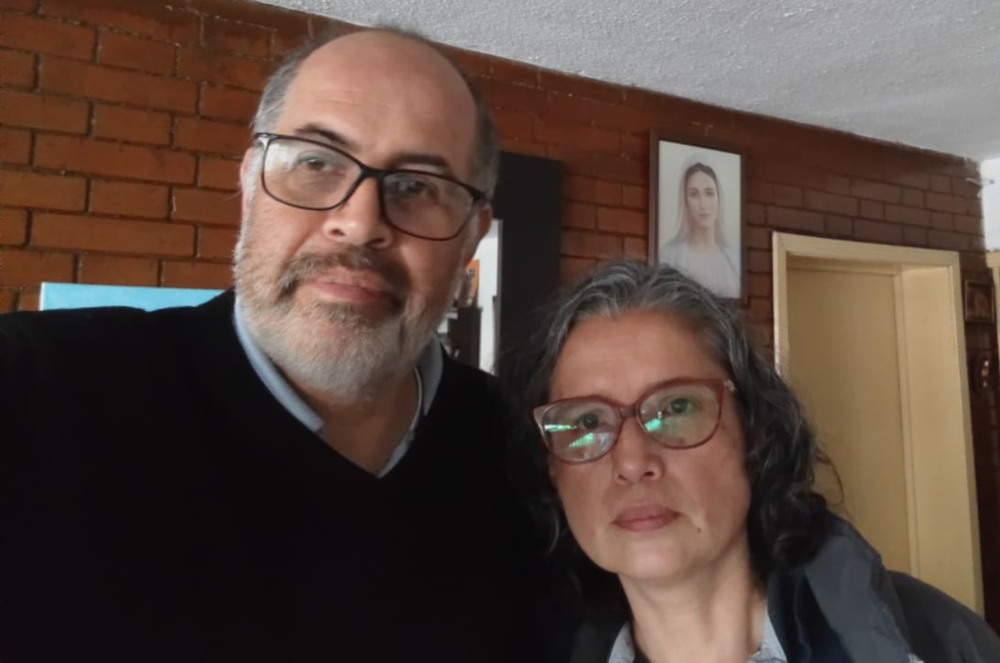

SG-SST Básico
Negocios de 1 a 3 trabajadores.
- Diagnóstico inicial
- Documentación esencial del sistema
- Capacitación inicial
Implementamos el Sistema de Gestión de Seguridad y Salud en el Trabajo en microempresas de Bogotá, cumpliendo la Resolución 0312 de 2019. Hacemos el trabajo por ti y te explicamos cada paso.
Ingenieros industriales, auditores internos ISO 9001 y una especialista con Licencia SST.
En Colombia todo empleador debe tener implementado el SG-SST. Tenerlo al día te protege a ti y a tu equipo.
No tenerlo puede traer multas y sanciones si recibes una visita de las autoridades.
Conocer los peligros de tu negocio es el primer paso para que nadie se lastime.
Si ocurre un accidente, tener todo documentado marca una gran diferencia.
Un proceso corto y ordenado, adaptado al tamaño de tu negocio.
Revisamos cuánto cumples hoy frente a los estándares mínimos.
Definimos qué hace falta y en cuánto tiempo se puede lograr.
Documentamos, capacitamos y organizamos tu sistema.
Te acompañamos para que tu SG-SST siga vigente todo el año.
Cada negocio es distinto. Te enviamos una cotización gratuita según tu número de trabajadores y tu nivel de riesgo (I, II o III).
Negocios de 1 a 3 trabajadores.
Negocios de 4 a 10 trabajadores.
Para negocios que ya tienen su SG-SST y quieren mantenerlo al día.
¿No sabes cuál te conviene? Escríbenos y lo definimos juntos en el diagnóstico.
Atendemos principalmente microempresas de Bogotá en riesgo I, II y III.
Mecánica, latonería, carpintería y otros oficios donde los riesgos son reales y diarios.
Tiendas, ferreterías, bodegas y locales que creen que el SG-SST no les aplica, y sí les aplica.
Pequeñas fábricas y unidades productivas que además necesitan cumplir con lo que piden sus clientes.
También acompañamos a empresas de servicios, instituciones educativas e iglesias católicas.

Somos ingenieros industriales y auditores internos en ISO 9001. Lourdes Muñoz es especialista en SG-SST y cuenta con Licencia SST.
Trabajamos de forma cercana con negocios pequeños de Bogotá: hablamos claro, sin tecnicismos, y nos enfocamos en que tu sistema funcione en el día a día y no solo en el papel.
Cuando tu negocio esté listo para dar el siguiente paso.
Sistema de gestión de la calidad para ordenar tus procesos y ganar la confianza de tus clientes.
Sistema de gestión de seguridad y salud en el trabajo con estándar internacional.
Revisamos fortalezas, incumplimientos y oportunidades de mejora.
Formación en seguridad, calidad y gestión del riesgo para tu equipo.
Sí. El SG-SST es obligatorio para todos los empleadores en Colombia, sin importar el tamaño de la empresa. Lo que cambia es el nivel de exigencia según tus trabajadores y tu nivel de riesgo.
Puedes recibir multas y sanciones si hay una visita de las autoridades, y tu responsabilidad puede ser mayor si ocurre un accidente de trabajo.
Depende del número de trabajadores y del nivel de riesgo de tu actividad. Hacemos un diagnóstico gratuito y te enviamos una cotización sin compromiso.
Depende de cuánto tengas adelantado y del tamaño de tu negocio. En el diagnóstico te damos un tiempo estimado.
Sí. Somos auditores internos en ISO 9001 y te acompañamos cuando tu negocio quiera dar ese paso.
Escríbenos y te hacemos un diagnóstico sin costo.